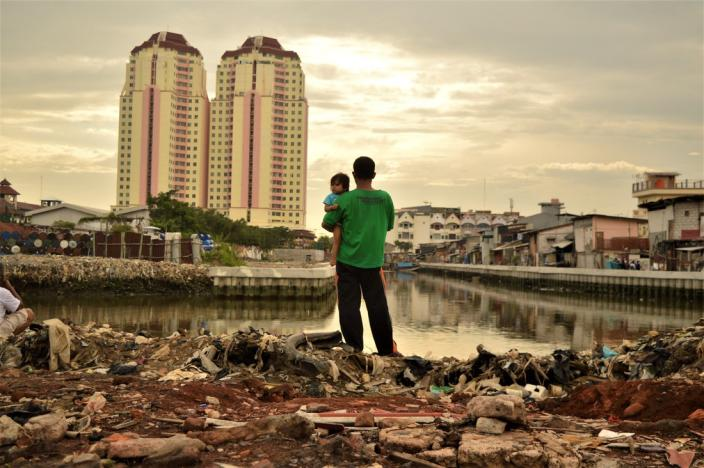
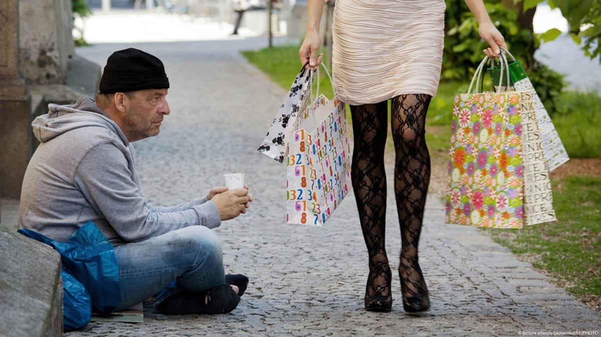
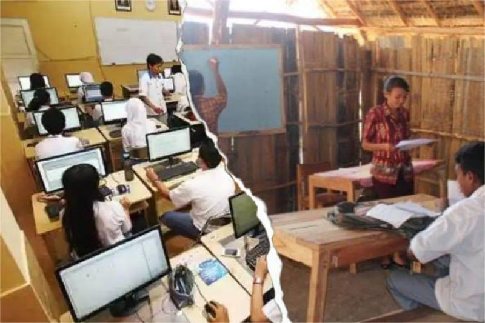

.png)
Analisis Masalah



.jpg)
Kondisi Kesenjangan di Indonesia
Di Indonesia kesenjangan adalah salah satu masalah yang perlu diperhatikan lebih. Kesenjangan terlihat dari perbedaan besar antara rakyat kaya dan miskin, ketidakseimbangan kualitas pendidikan di kota dibandingkan di desa, dan juga perbedaan akses terhadap fasilitas umum dan layanan kesehatan.
Selain itu, diskriminasi terhadap kelompok minoritas masih sering terjadi di Indonesia. Beberapa kelompok masih menghadapi tantangan untuk mendapat hak dan kesempatan yang sama dengan kelompok mayoritas, baik dalam masyarakat, sekolah, atau tempat kerja.
Meskipun begitu, Indonesia telah mencoba untuk mengurangi kesenjangan. Contohnya seperti memperluas program perlindungan sosial, meningkatkan akses pendidikan dan layanan kesehatan, serta mendorong perlindungan hak asasi manusia. Namun, hal-hal tersebut perlu ditingkatkan agar semua rakyat dapat memperoleh kesempatan dan hak yang sama.
Kondisi Kesenjangan di Dunia
Kesenjangan tidak hanya terjadi di Indonesia, tetapi juga merupakan masalah di berbagai negara di dunia. Perbedaan tingkat ekonomi antara negara maju dan negara berkembang masih sangat besar. Negara yang memiliki ekonomi kuat umumnya mempunyai akses lebih baik terhadap teknologi, pendidikan, kesehatan, dan berbagai fasilitas publik dibandingkan negara yang masih berkembang.
Selain kesenjangan antarnegara, kesenjangan juga bisa terjadi di dalam suatu negara. Masih banyak masyarakat yang hidup dalam kemiskinan, memiliki keterbatasan akses terhadap pendidikan dan layanan kesehatan, serta mengalami diskriminasi berdasarkan latar belakang sosial, agama, gender, maupun kondisi disabilitas.